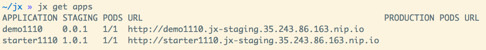

~/demo/charts/demo(master) » tree .
.
├── Chart.yaml
├── Makefile
├── README.md
├── charts
├── templates
│ ├── NOTES.txt
│ ├── _helpers.tpl
│ ├── deployment.yaml
│ └── service.yaml
└── values.yamlJenkins X
automated CI/CD solution for cloud native applications on Kubernetes
tedwon <jwon@redhat.com>
I am a Red Hat JBoss Senior SME at Seoul
Software Maintenance Engineer
Jenkins vs Jenkis X
Jenkins
Jenkins X
Transformation of Development Platform
Move from on premise to cloud
Move from VMs to containers
Immutable infrastructure for DevOps
Kubernetes has become the defacto standard
Move from monoliths to microservices
Become high performing teams via CI/CD
What are the challenges?
How do I migrate my applications to the cloud?
How do dev teams work with Kubernetes?
What do I need to start developing, building and deploying?
How do I wire everything together?
How do I access my applications?
Started by James Strachan
Started by James Strachan
Released at March of this year, 2018
Founder of Groovy, Apache ActiveMQ/Camel
Started by James Strachan
Developed similar project in Red Hat until last year, 2017
gofabric8
Features of Jenkins X
Automated CI and CD
Environment Promotion via GitOps
Pull Request Preview Environments
Feedback on Issues and Pull Requests
Supported Cloud Providers
Google Container Engine
OpenShift
Amazon Elastic Container Service
Azure Container Service
IBM Cloud Kubernetes Service
Oracle Cloud Container Engine
How does Jenkins X help?
Jenkins
CI/CD pipeline solution
Nexus
Artifact repository
Package manager for Kubernetes
Helm Chart
Helm Chart is a packaging format.
A chart is a collection of files that describe a related set of Kubernetes resources.
How does Jenkins X help?
Chartmuseum
Helm Chart repository
Monocular
Web UI for helm charts
Build packs to bootstrap applications
Skaffold
Tool for building docker images on kubernetes
How does Jenkins X help?
jx open
jenkins http://jenkins.jx.x.x.x.x.nip.io
jenkins-x-chartmuseum http://chartmuseum.jx.x.x.x.x.nip.io
jenkins-x-docker-registry http://docker-registry.jx.x.x.x.x.nip.
jenkins-x-monocular-ui http://monocular.jx.x.x.x.x.nip.io
nexus http://nexus.jx.x.x.x.x.nip.ioImport Maven Project
Environment Promotion via GitOps
jx env
? Pick environment: [Use arrows to move, type to filter]
> dev
production
stagingDevelopment Environment
Staging Environment
Production Environment
Demo & Environment Git Repository

jx get applications

jx get previews

How do we setup Kubernetes + Jenkins X?
Install the jx command line tool
macOs:
brew tap jenkins-x/jx
brew install jx
linux:
curl -L https://github.com/jenkins-x/jx/releases/download/v1.3.467/jx-darwin-amd64.tar.gz | tar xzv
sudo mv jx /usr/local/binHow do we setup Kubernetes + Jenkins X?
If using the public cloud use:
jx create cluster aws
jx create cluster gke
jx create cluster aks
How do we setup Kubernetes + Jenkins X?
If you have a cluster already - ensure RBAC enabled then:
jx install --provider=openshift
Create Cluster GKE
Google Container Engine $300 free credit
VSCode Jenkins X Extension
Demo
Demo - Deploy Spring Boot app
jx create cluster gke
Demo - Deploy Spring Boot app
Create Cluster GKE Record:
Demo - Deploy Spring Boot app
jx create spring -d web -d actuator
Demo - Deploy Spring Boot app
Record: https://asciinema.org/a/210872
Automatically set up CI/CD pipelines for new + imported projects
Setups up git repository
Adds webhooks on git to trigger Jenkins pipelines on PR / master
Triggers the first pipeline
Demo - Jenkins X on Pull Request
jx create issue -t 'add a homepage'
git checkout -b wip
vi src/main/resources/static/index.html
git add src
git commit -a -m 'add a homepage fixes #1'
git push origin wip
hub pull-requestDemo - Jenkins X on Pull Request
Builds and tests
Creates preview docker image + helm chart
Creates a Preview Environment and comments on the PR with the link

Demo - Jenkins X promotion via GitOps
jx promote --version 0.0.2 --env production
Demo - Jenkins X promotion via GitOps
Each environment stores its configuration as helm charts in a git repository
Reuse the Pull Request workflow for changes
To promote a version to, say, Production Jenkins X submits a Pull Request
The Promote step waits for the Pull Request CI build to complete
Jenkins X Roadmap
Try it out!
JBUG Jenkins X Hands-on https://goo.gl/oBbHxA

Thank you